8 ggplot2
ggplot2 es un sistema que permite crear gráficos complejos a partir de un conjunto de datos. Es un paquete cuya estructura deja que el usuario especifique cuáles variables desea graficar, cómo quiere que sean presentadas, entre otras propiedades acerca de la visualización de las mismas.
ggplot2 se basa en la gramática de gráficos cuya idea es poder construir un gráfico a partir de datos, geoms (marcas visuales representando puntos de datos) y un sistema de coordenadas.
8.1 Instalación de ggplot2
La manera más sencilla de obtener ggplot2 es instalando tidyverse en conjunto de la siguiente manera:
install.packages("tidyverse")También se puede instalar solamente ggplot2:
install.packages("ggplot2")Alternativamente, se puede optar por instalar la versión de GitHub:
install.packages("devtools")
devtools::install_github("tidyverse/ggplot2")8.2 Creando gráficos con ggplot2
8.2.1 Mapeo
El mapeo se debe definir usando la función aes() dentro de la función ggplot(). La función aes() se usa para definir cuáles son las variables que se quieren graficar y de qué manera se quieren presentar: sus ejes, su forma y color así como su tamaño, entre otros. Esta función se refiere a las características estáticas que tendrá el gráfico.
A continuación hará el mapeo de las variables educ y wage de la base de datos wage1 del libro de Wooldridge:
library("ggplot2") # Se carga el paquete de ggplot2
library(haven) # Se carga el paquete para leer archivos .dta
data <- read_dta("http://fmwww.bc.edu/ec-p/data/wooldridge/wage1.dta")
ggplot(data = data, mapping = aes(x = educ, y = wage))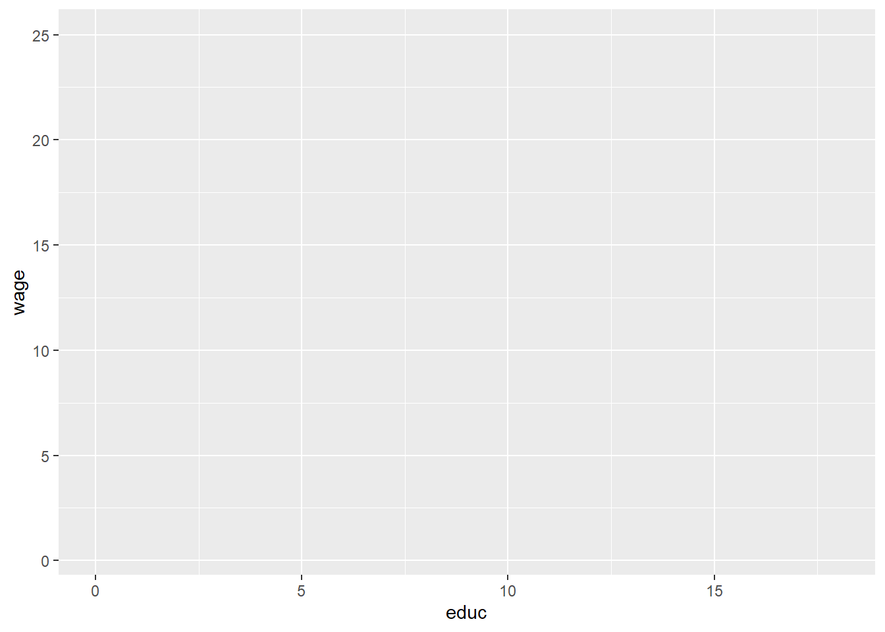
8.2.2 Geoms
Los geoms indican cómo se representan los datos en el gráfico, bien sea mediante líneas, barras, puntos, etc. Los geoms más utilizados son:
- geom_line(): Usado para líneas de tendencia, series de tiempo, etc.
- geom_point(): Usado para diagramas de dispersión, diagramas de puntos, etc.
- geom_boxplot(): Usado para diagramas de caja.
- geom_density(): Usado para diagramas de densidad.
- geom_histogram(): Usado para histogramas de frecuencias.
- geom_bar(): Usado para diagramas de barras.
Siempre se debe llamar a la función geom para generar el gráfico. Para agregar un geom se usa el operador “+”, de esta manera tembién se puede hacer uso de varios geom simultáneamente.
Graficaremos la relación entre salario y años de educación mediante un diagrama de puntos:
ggplot(data = data, mapping = aes(x = educ, y = wage)) + geom_point() +
labs(x="Años de educación", y="Salario hora", title="Relación salarios-educación")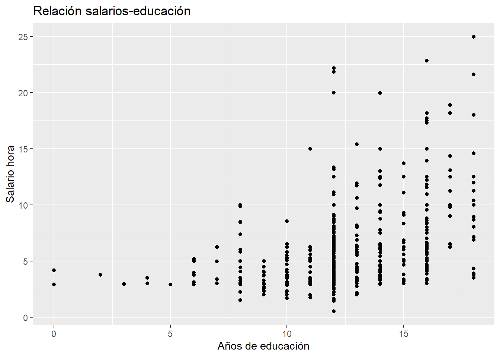
Se puede usar color para distinguir si el salario le corresponde a una mujer o a un hombre. Se usa factor para especificar la variable que usaremos para distinguir el color es cualitativa.
ggplot(data = data, mapping = aes(x = educ, y = wage, color = factor(female))) +
geom_point(size=2) +
labs(x="Años de educación", y="Salario hora", title="Relación salarios-educación", color="Género") +
scale_color_manual(labels = c("Hombres", "Mujeres"), values = c("blue", "red")) 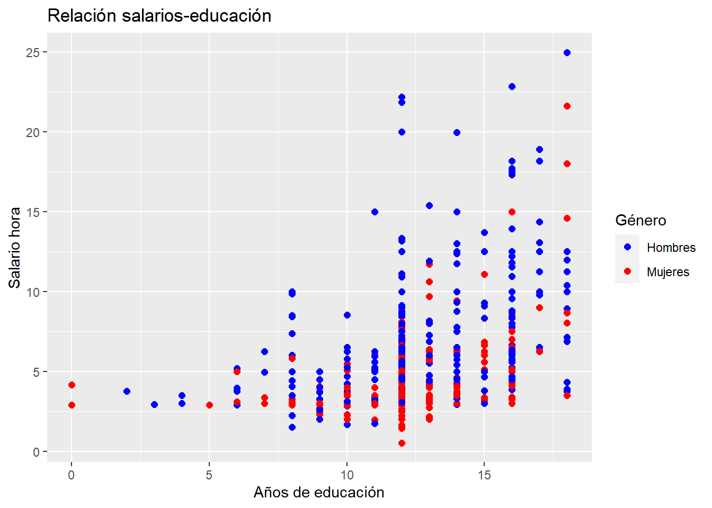
8.2.3 Capas
Con ggplot se puede visualizar dos tipos de gráficos, o más, en uno, usando capas. A continuación ilustraremos la relación que existe entre el salario y los años de educación, usando un scatterplot y sobreponiendo una línea de regresión lineal simple, para esto usamos geom_smooth() en otra capa:
ggplot(data = data, aes(x = educ, y = wage)) +
geom_point() +
geom_smooth(method="lm") +
labs(x="Años de educación", y="Salario hora", title="Relación salarios-educación")## `geom_smooth()` using formula 'y ~ x'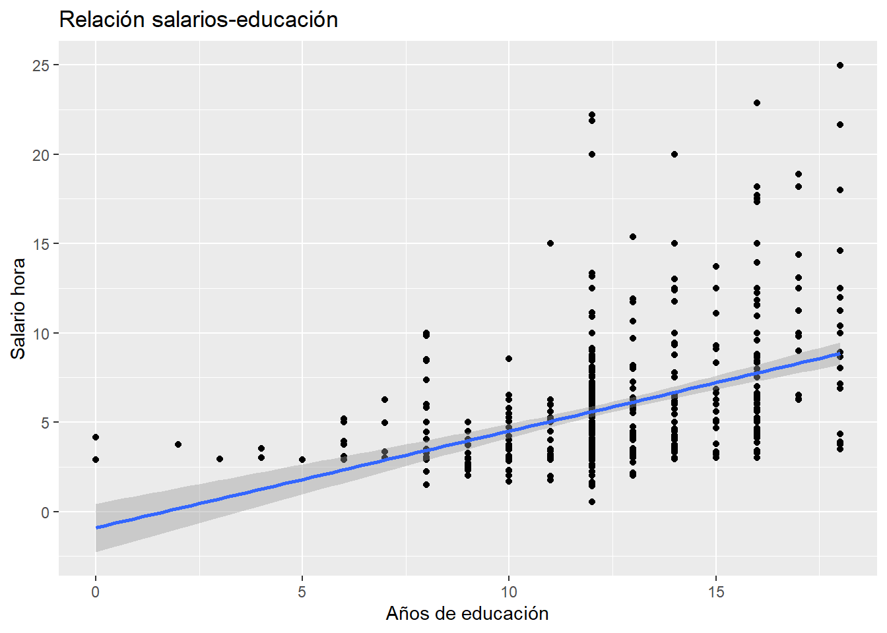
Con ggplot también podemos usar la función escala para modificar las unidades de una variable. En este caso la usaremos para que se muestre la variable wage (eje Y) en logaritmo. Además, usaremos la función alpha para modificar la transparencia de los puntos en el gráfico. La línea de la regresión lineal también puede tener tamaños distintos, en este caso modificaremos su tamaño usando la función size.
ggplot(data = data, aes(x = educ, y = wage)) +
geom_point(alpha = 0.5) +
scale_y_log10() +
geom_smooth(method="lm", size=1.5) +
labs(x="Años de educación", y="Log salario hora", title="Relación salarios-educación")## `geom_smooth()` using formula 'y ~ x'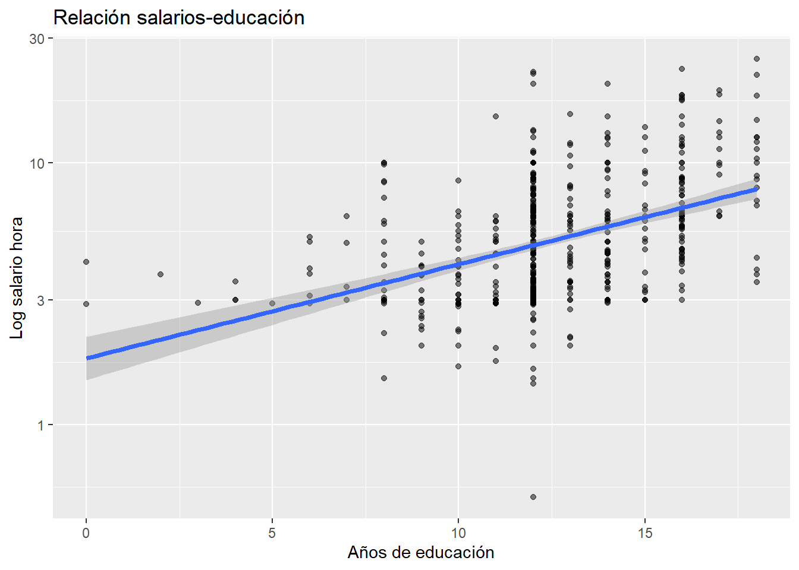
8.2.4 Gráficas en varios paneles
Para visualizar dos o más gráficos en varios paneles se debe agregar una capa facet. Grafiquemos la relación entre salario y años de educación distinguiendo entre hombres y mujeres:
ggplot(data = data, aes(x = educ, y = wage, color = factor(female))) +
geom_point(show.legend = FALSE) +
geom_smooth(method="lm",show.legend = FALSE) +
facet_grid(~female, labeller = labeller(female=c("0" = "Hombres", "1" = "Mujeres"))) +
labs(x="Años de educación", y="Salario hora", title="Relación salarios-educación")## `geom_smooth()` using formula 'y ~ x'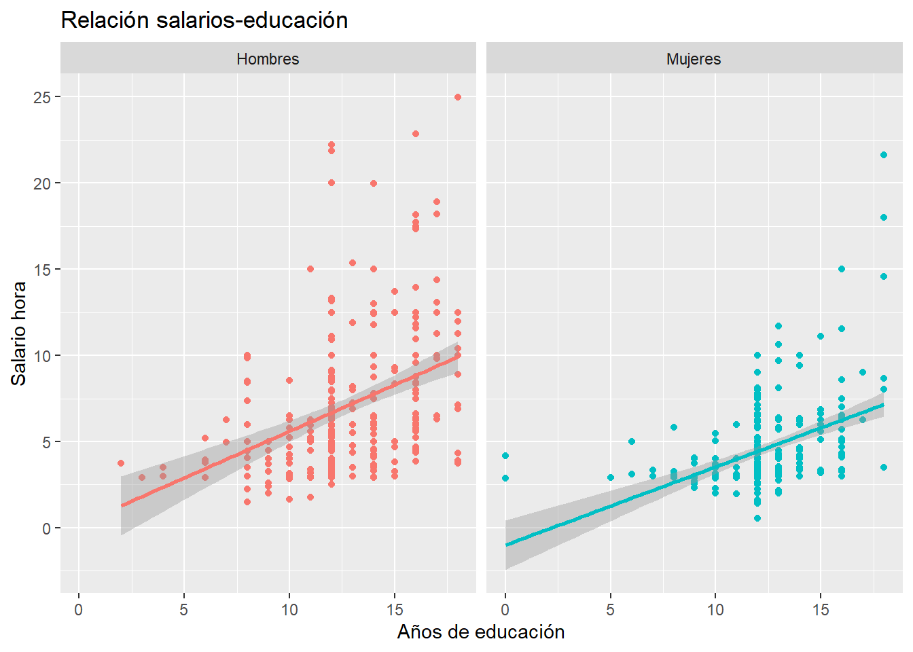
8.3 Otros ejemplos de gráficos con ggplot2
Es muy amplio el número de tipos gráficos que pueden ser realizados con ggplot2. A continuación se mostrarán algunos ejemplos de estos.
8.3.1 Gráfico de densidad
Realicemos ahora un gráfico de densidad usando los datos de salarios, diferenciando entre hombres y mujeres. Para este gráfico se debe usar el geom geom_densitiy. En este caso, llenaremos el área bajo las curvas de densidad usando la función fill. Usaremos además la forma alternativa de estipular la estética del gráfico: haciéndolo dentro del geom de densidad.
ggplot(data = data) +
geom_density(aes(x = wage, fill = factor(female)), alpha = 0.5) +
labs(y = "Densidad", x = "Salarios hora", title = "Densidad de los salarios hora") +
scale_fill_manual(name = "Género", values = c("#122bc7", "#dc143c"), labels = c("0" = "Hombres", "1" = "Mujeres"))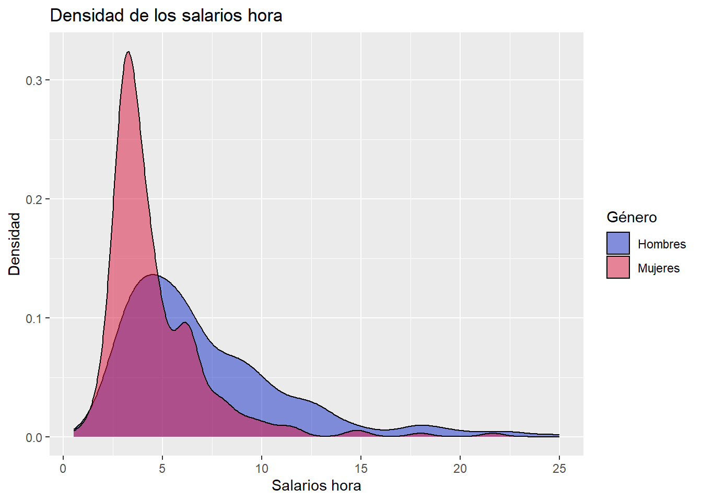
8.3.2 Boxplot
También realicemos un boxplot para comparar los salarios para hombres y mujeres. El geom que se debe usar es geom_boxplot, los otros parámetros se especifican de manera similar a los gráficos que hemos hecho anteriormente, de esta forma el código será:
ggplot(data = data) +
geom_boxplot(aes(x = factor(female), y = wage)) +
labs(y="Salario hora", x="Género") +
scale_x_discrete(labels=c("Hombres","Mujeres"))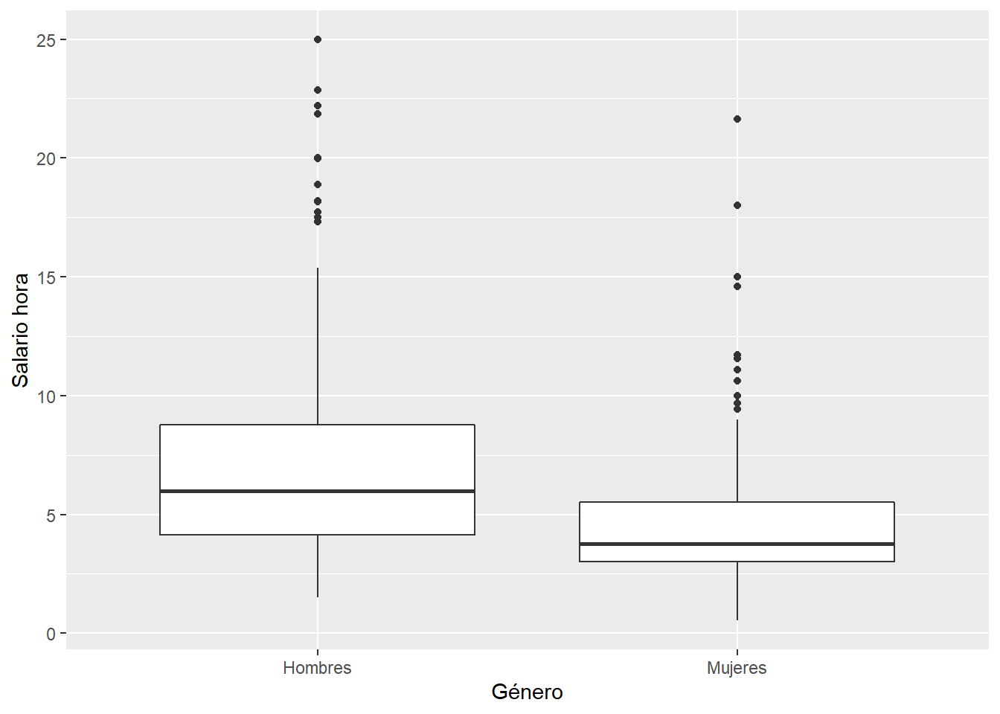
Si se quiere, se pueden invertir las coordenadas del boxplot:
ggplot(data = data) +
geom_boxplot(aes(x = factor(female), y = wage)) +
labs(y="Salario hora", x="Género") +
scale_x_discrete(labels=c("Hombres","Mujeres")) +
coord_flip()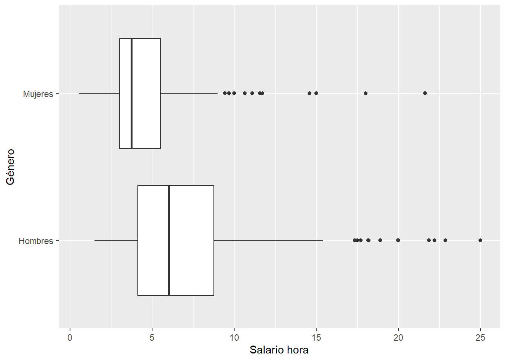
8.3.3 Histograma y diagrama de barras
Generemos histogramas para los datos de años de educación de hombres y mujeres en nuestra base de datos. Primero, generemos un histograma sencillo.
## `stat_bin()` using `bins = 30`. Pick better value with `binwidth`.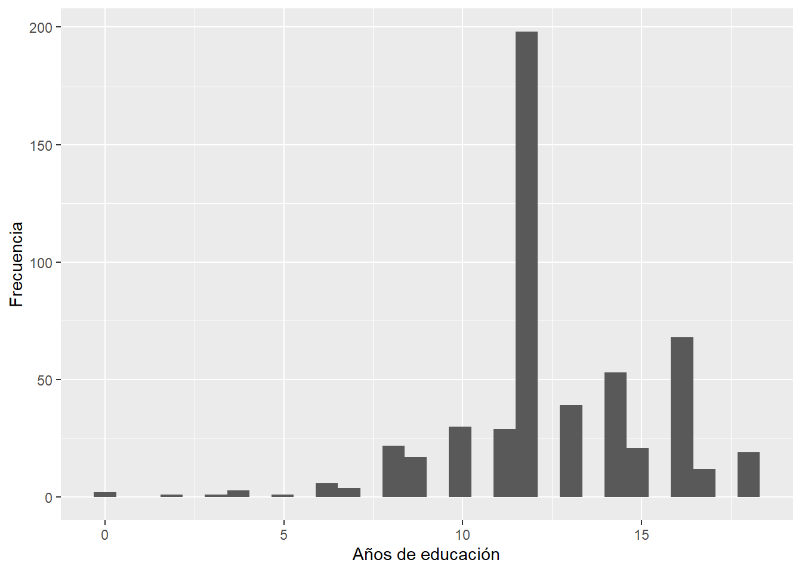
Ahora, si queremos limitar el número de barras en nuestro histograma para que sea más compacto, debemos usar bins, de esta manera:
ggplot(data = data) +
geom_histogram(aes(x = educ), bins=10) +
labs(x="Años de educación", y = "Frecuencia")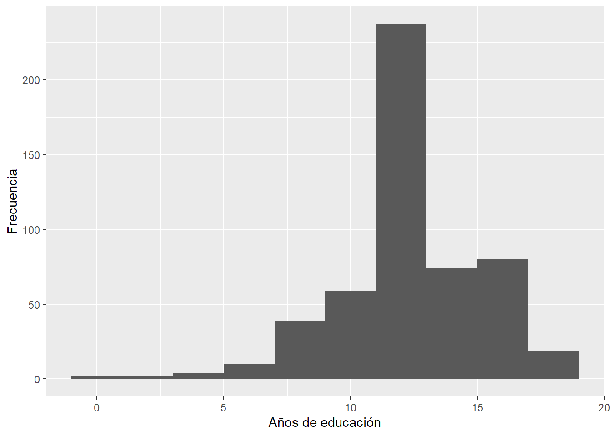
También podemos hacer que el histograma diferencia entre hombres y de mujeres. En este caso, lo haremos apilando las barras, para esto debemos especificar la función position, en este caso a stack. Así quedará entonces nuestro código:
ggplot(data = data) +
geom_histogram(aes(x = educ, fill = factor(female)), bins=10, position = "stack", alpha=0.5) +
labs(x = "Años de educación", y="Frecuencia",title = "Años de educación por género") +
scale_fill_manual(name = "Género", values = c("#122bc7", "#dc143c"), labels = c("0" = "Hombres", "1" = "Mujeres"))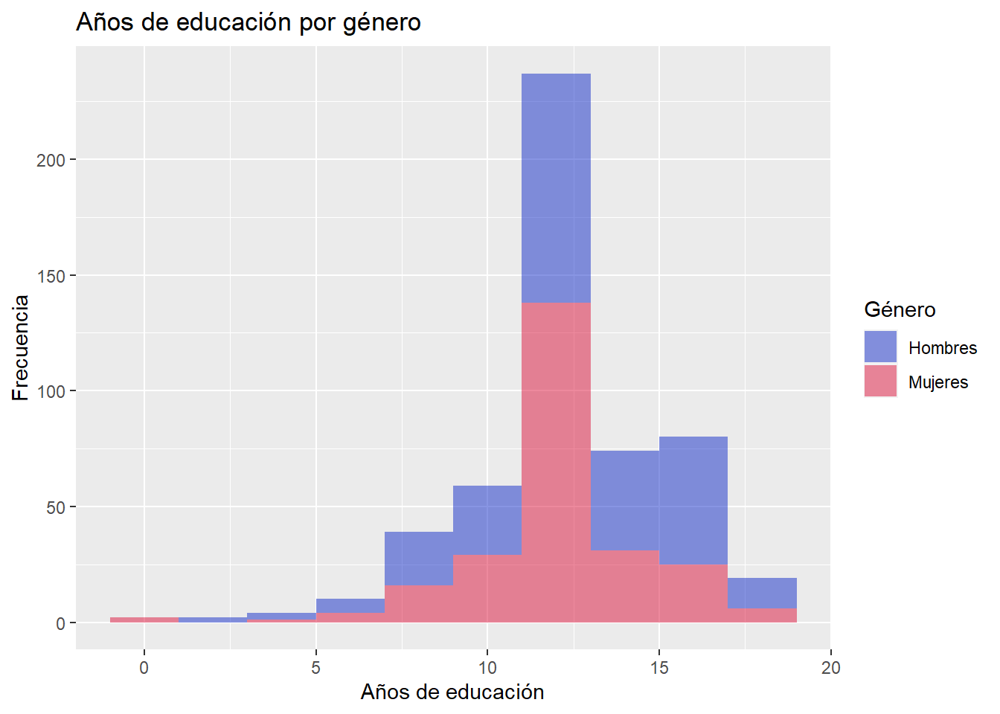
8.4 Temas en ggplot2
ggplot2 provee también temas predeterminados para la estética de los gráficos, en estos temas se especifican aspectos sobre los ejes, el tamaño del gráfico, los colores, entre otros. Hay diversos temas en ggplot2, tanto los que están incluidos en él como algunos que crea la comunidad.
Usemos por ejemplo los temas theme_bw, theme_classic y theme_dark en uno de los gráficos que creamos anteriormente, para diferenciar entre ellos:
ggplot(data = data, aes(x = educ, y = wage, color = factor(female))) +
geom_point(show.legend = FALSE) +
geom_smooth(method="lm",show.legend = FALSE) +
facet_grid(~female, labeller = labeller(female=c("0" = "Hombres", "1" = "Mujeres"))) +
labs(x="Años de educación", y="Salario hora", title="Relación salarios-educación") +
theme_bw()## `geom_smooth()` using formula 'y ~ x'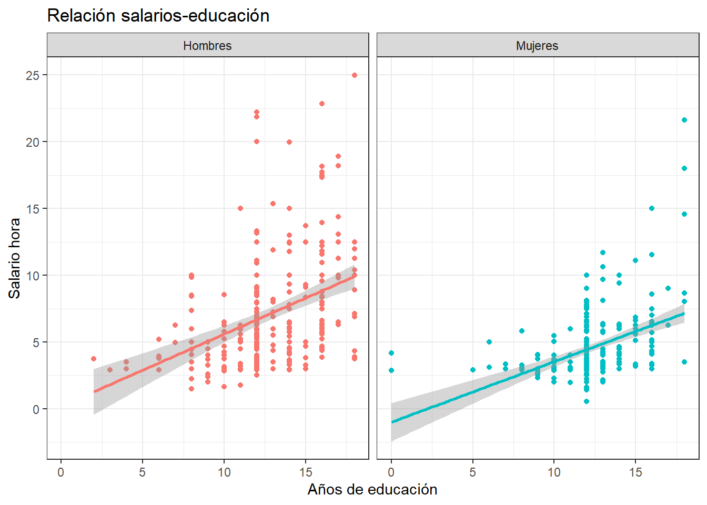
ggplot(data = data, aes(x = educ, y = wage, color = factor(female))) +
geom_point(show.legend = FALSE) +
geom_smooth(method="lm",show.legend = FALSE) +
facet_grid(~female, labeller = labeller(female=c("0" = "Hombres", "1" = "Mujeres"))) +
labs(x="Años de educación", y="Salario hora", title="Relación salarios-educación") +
theme_classic()## `geom_smooth()` using formula 'y ~ x'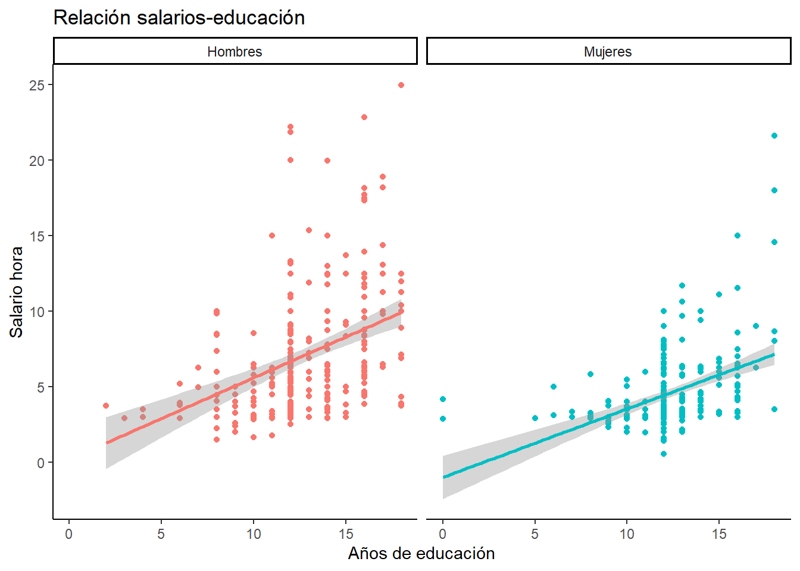
ggplot(data = data, aes(x = educ, y = wage, color = factor(female))) +
geom_point(show.legend = FALSE) +
geom_smooth(method="lm",show.legend = FALSE) +
facet_grid(~female, labeller = labeller(female=c("0" = "Hombres", "1" = "Mujeres"))) +
labs(x="Años de educación", y="Salario hora", title="Relación salarios-educación") +
theme_dark()## `geom_smooth()` using formula 'y ~ x'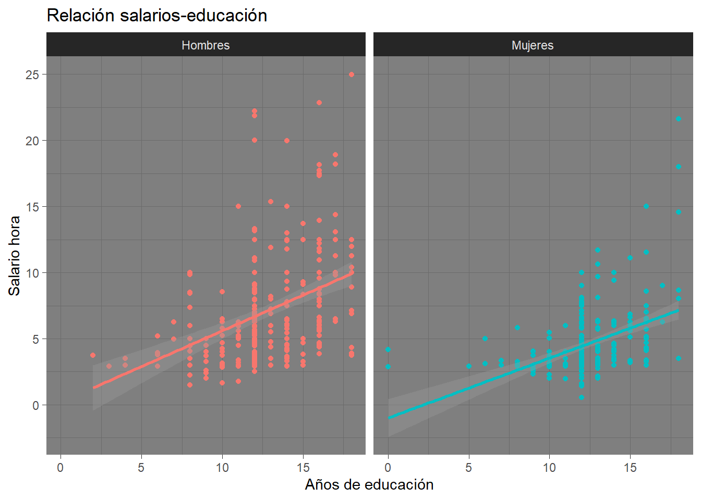
Como se puede observar, los temas modifican la estética de los gráficos. Hay muchos paquetes de gráficos que se pueden encontrar en internet y que ofrencen gran variedad de apariencias para los gráficos.
8.5 Exportando gráficos
Para exportar gráficos realizados con ggplot se usa la función ggsave(). En esta, se puede especificar el ancho y el alto de la gráfica, así como los dots per inch (dpi), para modificar la resolución con que son guardados. Para la última gráfica realizada primero debemos asignarla a una variable, para luego guardarla como png en la carpeta que se desee.
g1 <- ggplot(data = data, aes(x = educ, y = wage, color = factor(female))) +
geom_point(show.legend = FALSE) +
geom_smooth(method="lm",show.legend = FALSE) +
facet_grid(~female, labeller = labeller(female=c("0" = "Hombres", "1" = "Mujeres"))) +
labs(x="Años de educación", y="Salario hora", title="Relación salarios-educación")
ggsave(filename = "./docs/images/g1.png", plot = g1, width = 12, height = 10, dpi = 300, units = "cm")## `geom_smooth()` using formula 'y ~ x'8.6 Información adicional
ggplot2 tiene muchas más funciones de las brevemente explicadas. Se pueden hacer gran variedad de gráficos y se pueden mostrar de muchas distintas maneras. Una hoja de referencia sobre visualización de datos con ggplot2 se puede consultar en el siguiente link: https://rstudio.com/wp-content/uploads/2015/04/ggplot2-spanish.pdf
Tarea 12: Utilizando la base de datos bwght.dta (los datos pueden ser descargados con la siguiente función read_dta(“http://fmwww.bc.edu/ec-p/data/wooldridge/bwght.dta”)) del libro de Wooldridge realice un análisis del impacto que pueden tener distintos factores en el peso de un bebé al nacer. Para esto, realice las siguientes gráficas y analícelas brevemente:
Un diagrama de dispersión que relacione el peso del bebé al nacer y el ingreso familiar.
Un diagrama de dispersión que relacione el número de cigarrillos que fumaba la madre del bebé diariamente mientras estaba embarazada y el peso del bebé al nacer. Diferencie entre un bebé hombre y mujer.
Un gráfico de dos paneles que muestre, en uno, la relación entre los cigarrillos fumados diariamente y el impuesto que estos tenían y, en otro, la relación entre los cigarillos fumados diariamente y el precio de los mismos.
Un gráfico de densidad para el peso del bebé al nacer, diferenciando entre bebés hombres y muejeres.
Un boxplot del ingreso familiar.
En un gráfico con dos paneles grafique el modelo de regresión lineal simple que relacione el peso del bebé al nacer con el número de cigarrillos fumados diariamente, diferenciando entre bebés hombres y mujeres.